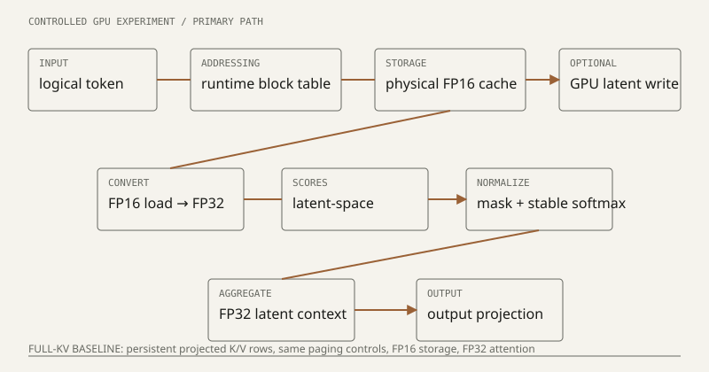
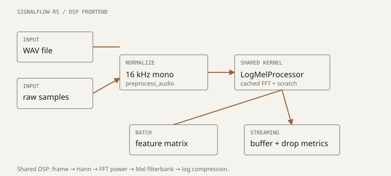

2026 -

I am currently working on GPU computing, LLM inference & distributed systems. My most developed public project is LatentPagedAttention-rs, a Rust, Python, and cuTile research prototype for studying paged latent-cache decode attention on an RTX 4060.
The work is a controlled GPU systems experiment, not a production serving runtime or complete model integration.
2026 -

I have also been building small systems experiments around streaming audio features, evidence-first review pipelines, vector-search evaluation, and source-verified KV-cache observability. I try to keep claims close to tests, benchmarks, and reproducible artifacts.
2023 - 2027
B.Tech in Computer Science and Engineering at Anurag University. Based in Hyderabad, India.
bio
Tata Vishnu Rao is a computer science student working on ML systems and AI infrastructure. His current work is systems-oriented: LLM inference, GPU execution, cache behavior, distributed systems, Rust/C++ software, and reproducible evaluation. He is especially interested in the boundary between model behavior and hardware constraints: memory hierarchy, paging structures, kernel design, and serving-time trade-offs. A secondary direction is robotics software and embodied AI, where perception, control, and systems reliability meet.
selected research
featured work
- 2026LatentPagedAttention-rs v0.1.1 — correctness-first release around paged latent-cache attention experiments.
- 2026RealKV-Serve — milestone-one compatibility and observability harness for the TensorRT-LLM paged KV-cache lifecycle on a consumer RTX GPU.
featured writing
Implementation notes and technical reports. These are meant to preserve the engineering path: what was built, what was measured, and what the result does not claim.
pet projects
This is a small curated list. See the current source on GitHub.
{kind=link}
LatentPagedAttention-rs is a Rust, Python, and cuTile experiment measuring the memory-compute trade-off of paged latent-cache decode attention. It includes references, Rust CPU paths, GPU paths, deterministic fixtures, benchmark reports, and explicit limitations.
{kind=link}
signalflow-rs is a real-time-capable Rust DSP/log-Mel frontend for audio feature extraction. The pipeline covers preprocessing to 16 kHz mono, framing, Hann windowing, FFT power spectrum, Mel filtering, log compression, streaming buffers, and drop metrics.
{kind=link}
DubPatch is an evidence-first review system for Sarvam-dubbed automotive Shorts. It produces preserved, review_required, or unable_to_verify states rather than a universal accuracy score or autonomous certification.
{kind=link}
GlyphPortrait is a semantic digital micrography engine for portrait reconstruction. It takes a person image and user-provided words, extracts and vectorizes visual regions, generates text streamlines, and renders the person using readable text.
{kind=link}
SochDB / LoCoMo retrieval benchmarks collect reproducible benchmark lanes for vector search and agent-memory retrieval, separating retrieval quality, system overhead, datasets, workloads, raw outputs, and reports.
research
engineering notes
- GPU systems
- CUDA
- LLM inference
- attention
- memory hierarchy
- distributed systems
- databases
- Rust
- C++
- robotics
- vision-language models
- signal processing
misc
- I prefer small reproducible experiments over large uninspectable demos.
- Current interests include GPU memory behavior, attention kernels, serving systems, robotics software, and databases for long-lived agents.
- The site is intentionally plain HTML and CSS, because the content should outlive the framework.